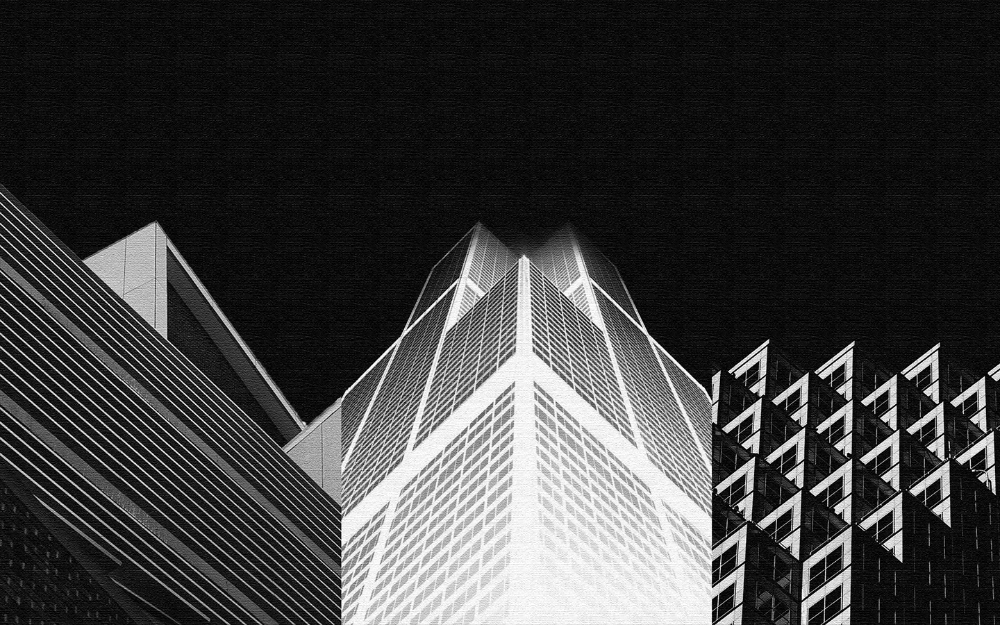
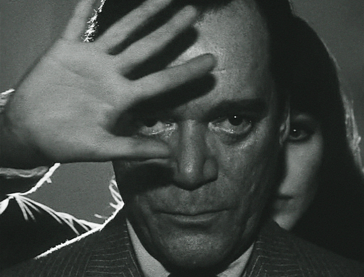
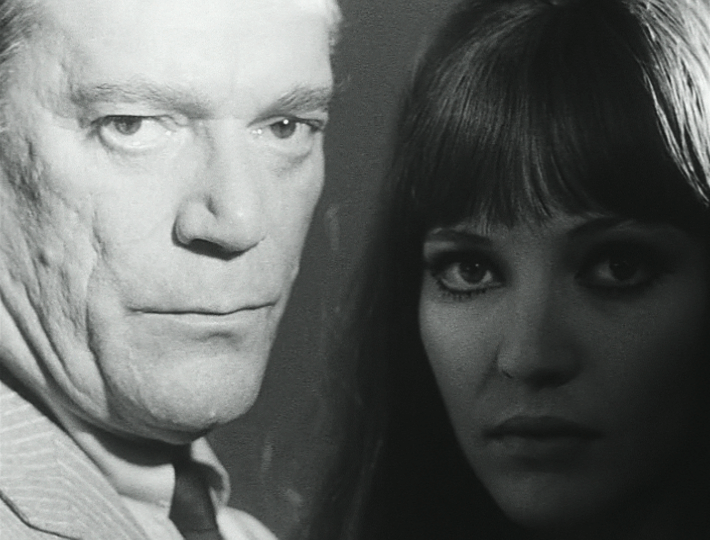
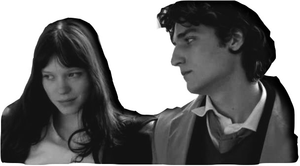
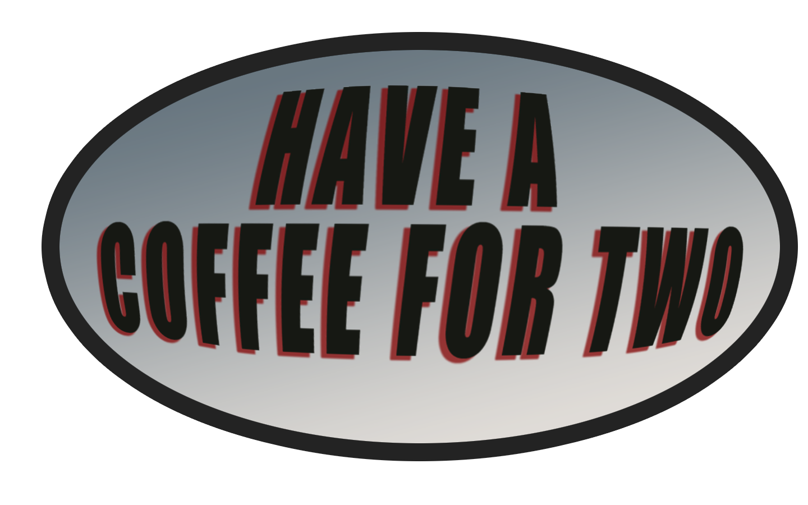

Welcome to Cafe Muller
Combine all
discrete individuals
together:

Woman eye watching
Talks to woman
The man and woman were silent
Open space
Serious architecture
Deconstructing the subject
Nervous words



CLICK TO
hug me.
